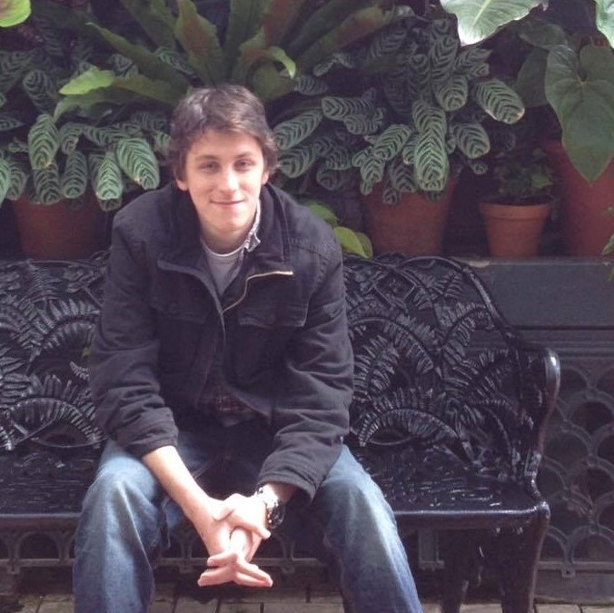

About Us
Brett Benda

I'm a third-year Digital Arts and Science major, as well as both a teaching assistant and a research assistant. I'm originally from Orange Park, Florida and graduated high school in 2015. Here's a link to my personal website with more details about me.
Cristian Duica
I'm a computer science major who took intro to das on my own free will. When I'm not coding, I enjoy recording music and biking around Gainesville (at night). The first DAS course I ever took was intro to animation, and ever since then I've wanted to learn more.
Thamas McGowan
Currently studying at the University of Florida, Thamas is pursuing a BA in Digital Arts and Sciences. He’s worked in 2D and 3D Animation, Java, C#, C++, and built games in Unity. Thamas aims to build a broad, strong foundation in the diverse fields present in DAS and use that foundation to be a flexible asset in the game industry. In his free time Thamas plays video games, Magic the Gathering, and runs Dungeons and Dragons along with other Tabletop RPGs.
Alejandro Rivera
My name is Alejandro Rivera, and I am a 4th year computer science major and sales engineering minor at the University of Florida. I was born in Queens, NY in 1996.